連線進入 VM ( linux )
總共有 4 種方法可以進入 VM 本篇文章將依序作介紹
SSH 連線會需要用到 tcp:22，一般專案開好會有預設防火牆 tcp:22 但是 VM 跟 IP 全開 ( 建好 VM 可以直接連就是因為這樣 )，需要再做設定防火牆文章可以到這裡看 文章傳送門
一、 使用 GCP 開啟新視窗連線
創建好 VM 後直接點擊右邊 SSH 或是 ▼ 在瀏覽器視窗中開啟
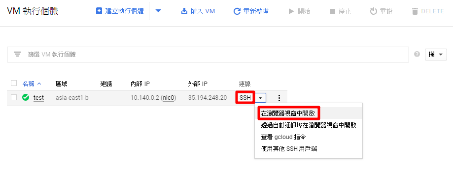
點擊完後會另外再開一個視窗，這時候 VM 連進去會幫你加金鑰
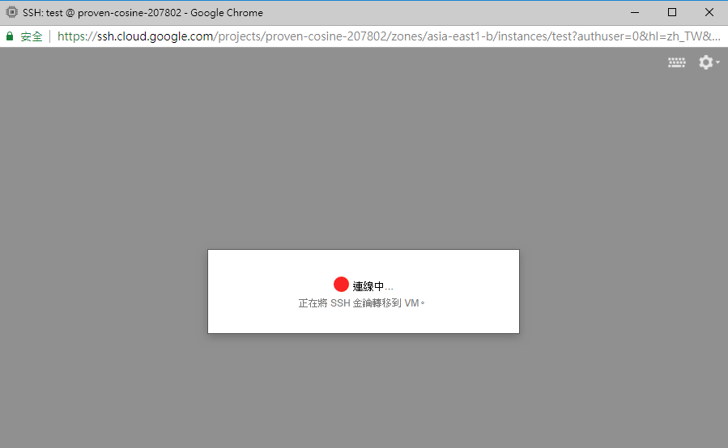
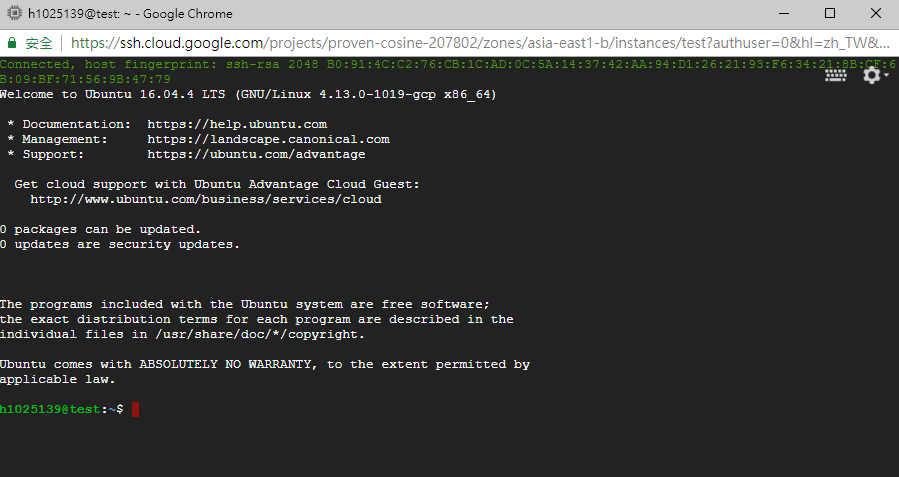
可以在 Compute Engine → 中繼資料 → SSH 金鑰，查看金鑰
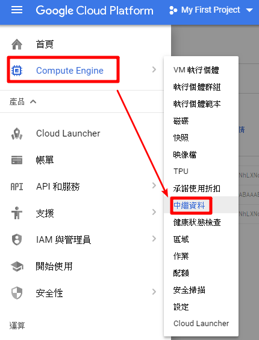
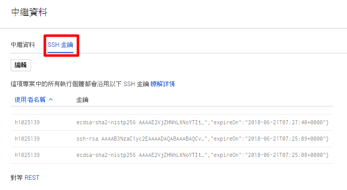
二、 使用 Cloud Shell 連線
打開 Cloud Shell

使用指令連線進入
1 | gcloud compute ssh (VM名稱) --zone (區域) |
ex：gcloud compute ssh test --zone asia-east1-b
輸入 y 繼續
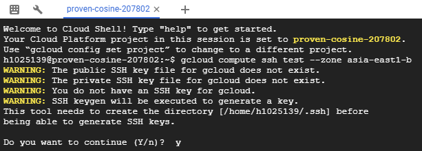
生成公鑰/私鑰，會輸入密碼點 2下 Enter 使用空密碼 ( 第一次會有這些步驟，下次在下指令就不會有了 )
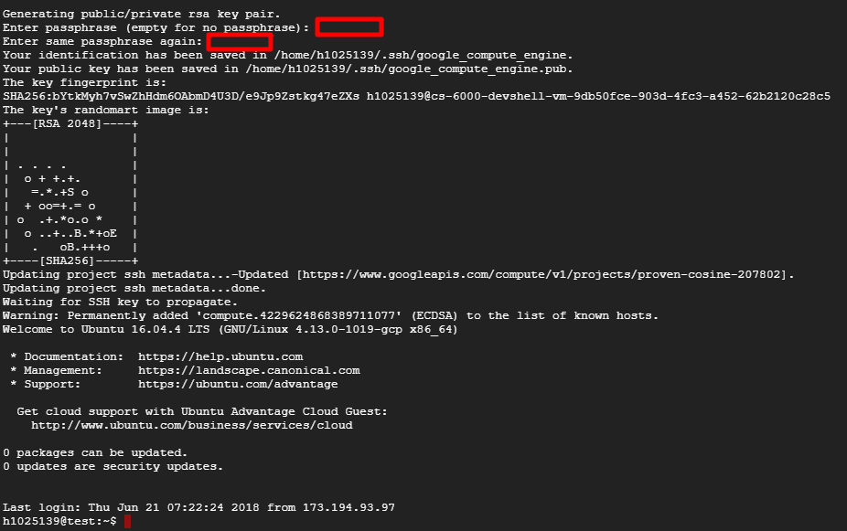
原本是帳號加專案 ID
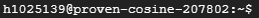
看到變成帳號加 VM 名稱就是進去了，接下來就可以直接操作了
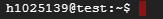
三、 使用 Cloud SDK 連線
Cloud SDK：Cloud SDK 是一套 Cloud Platform 工具，其中包含 gcloud、gsutil 和 bq，可讓您透過指令列存取 Google Compute Engine、Google Cloud Storage、Google BigQuery，以及其他產品和服務。您可以利用這些工具進行互動操作，也可以運用在您的自動化指令碼中。 ( Cloud Shell 使用的指令就是 SDK 的指令 )
安裝 SDK，下載：https://cloud.google.com/sdk/
啟動 SDK
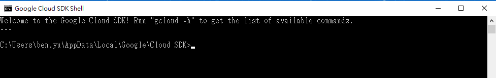
如果帳號不對要記得切換帳號
1 | gcloud auth login 帳號 |
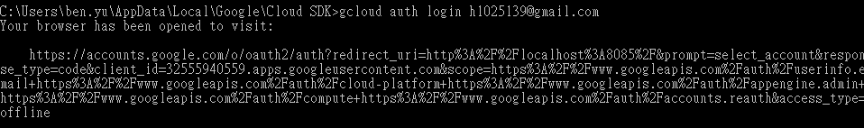
切換帳號它會開個網頁讓你選目前想用的帳號
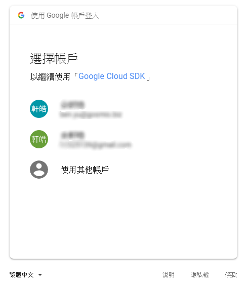
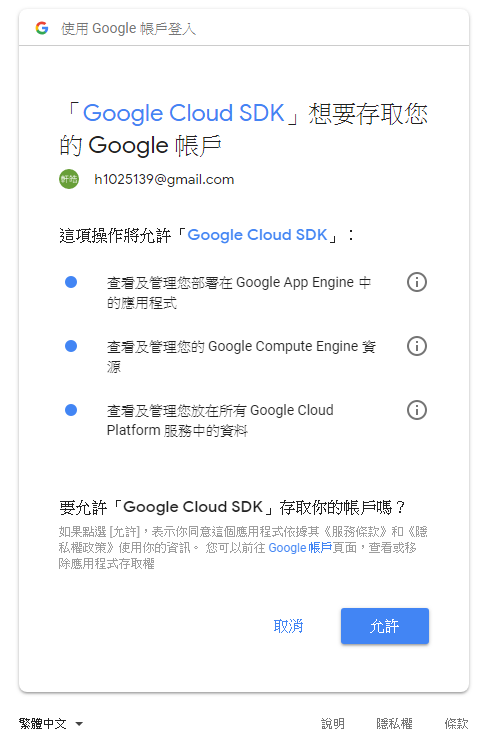
出現此畫面就是成功了，第一次會需要網頁點帳號再來就不用了
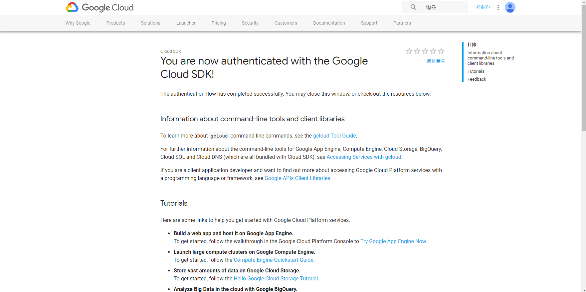
可以下指令檢查一下，目前使用的帳號前面會有 *
1 | gcloud auth list |
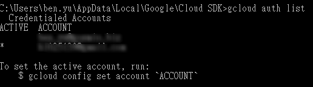
接下來和 Cloud Shell 一樣步驟，輸入完指令會再開一個終端機就是成功了 ( y/n 不用輸入到這邊後就會跳出一個新視窗連進 VM )
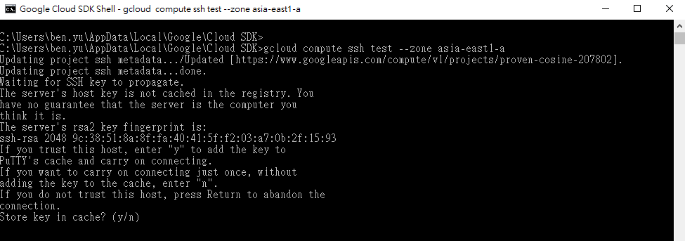
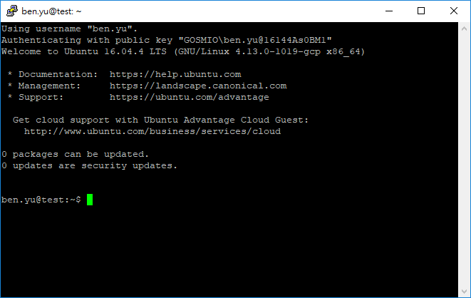
四、 使用其他程式連線，本文章使用 Xshell 5 可以使用自己熟悉程式
首先創建金鑰
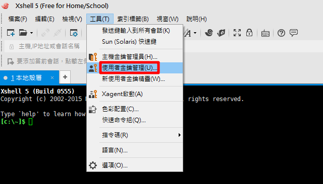
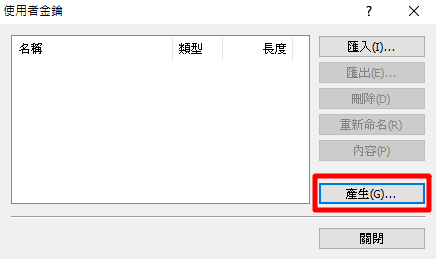
選擇 RSA 長度選 2048 目前 1024 已經不太安全
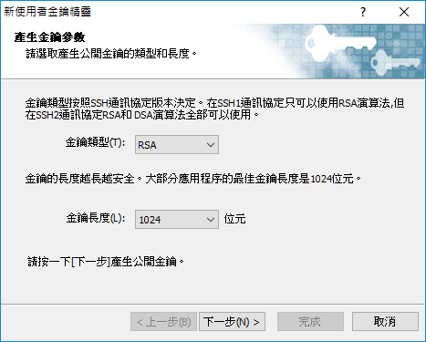
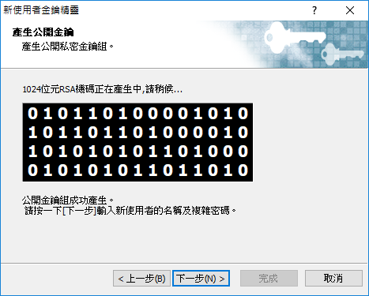
設定密碼和名稱
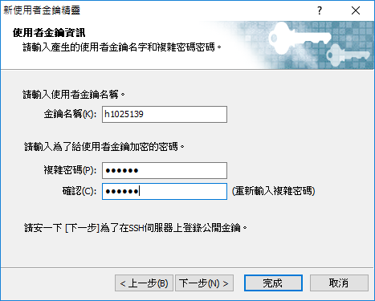
複製金鑰或儲存
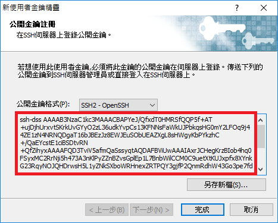
到 GCP Compute Engine → 中繼資料 → SSH 金鑰，添加金鑰
點編輯把剛剛複製的金鑰貼上 ( 要按照格式不然會出現錯誤，空格輸入要命的名稱，輸入名稱將會在使用 Xshell 5 連線時用到 )
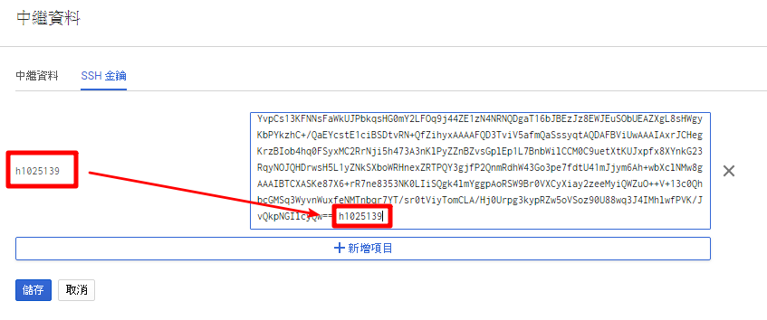
接下來到 VPC 網路 → 防火牆規則

SSH 是使用 22 port，可以更改預設也可以自己建立一個
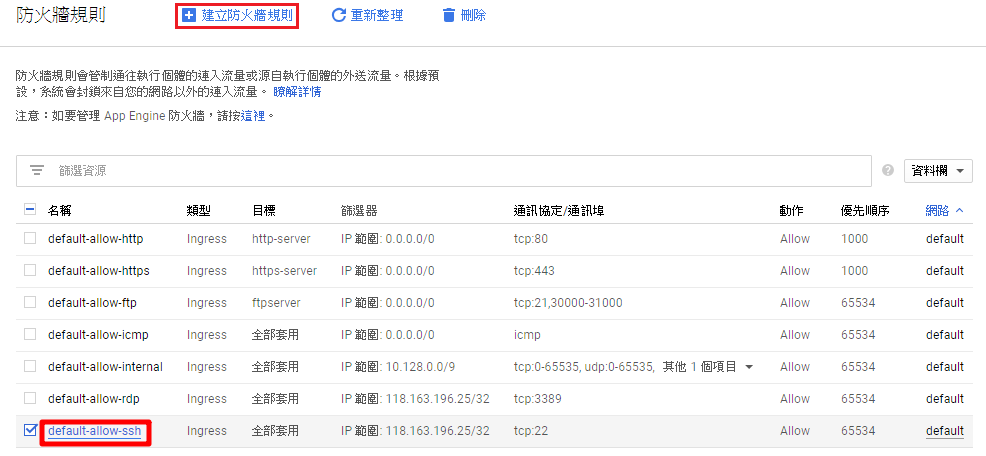
點選防火牆名稱進入後點編輯，加入自己的 ip ( 外網 )，儲存
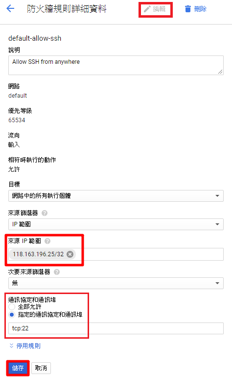
回到 Xshell 5 點選新增工作
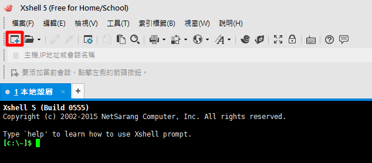
連線：輸入名稱 ( 隨意 ) 和 ip
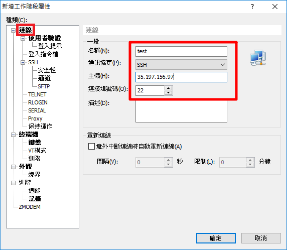
使用者驗證：方法選 Public Key 使用者名稱輸入中繼資料輸入的名稱，選擇剛剛建立的金鑰使用者和輸入密碼
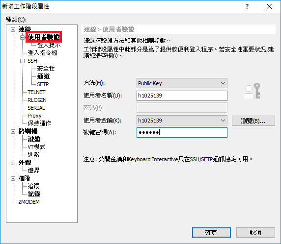
第一次登入會出現 SSH 安全性警告，點選接受及存檔
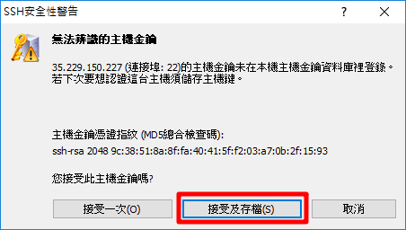
如果上面使用者驗證沒輸入到使用者名稱的話會問使用者名稱
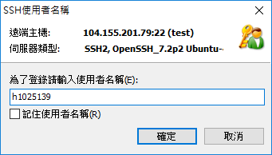
恭喜完成連線！
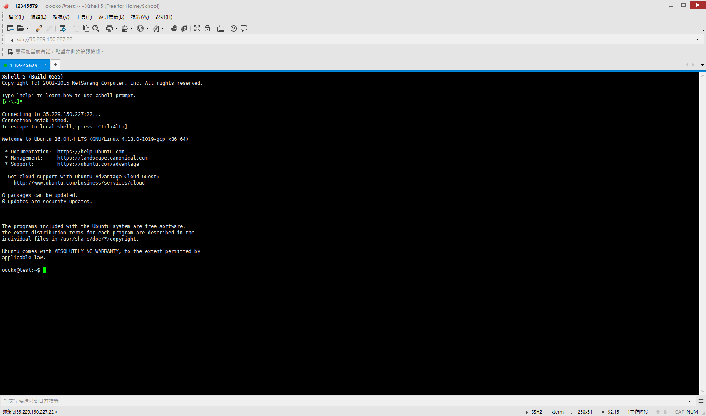